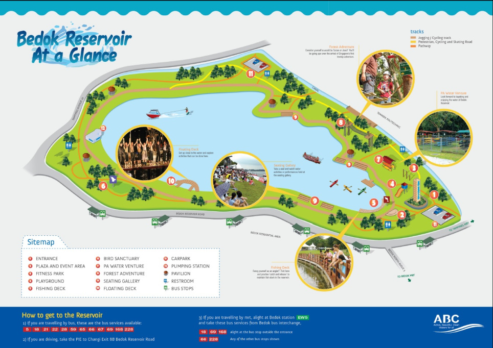
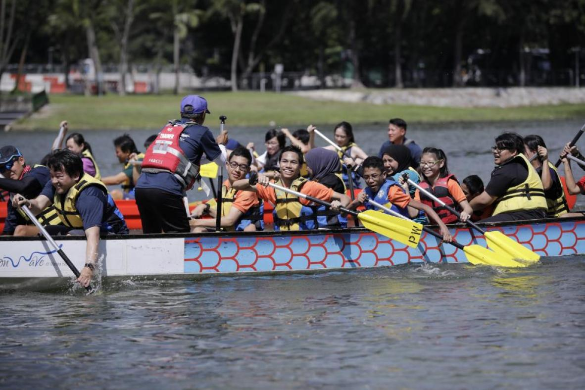
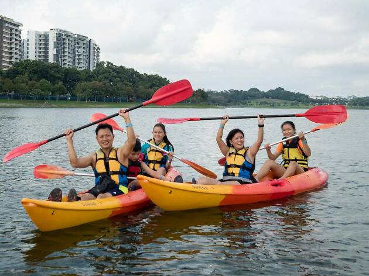
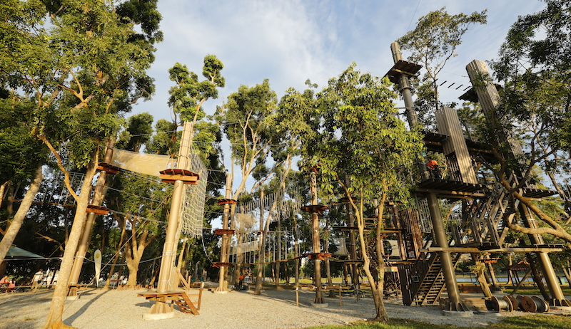
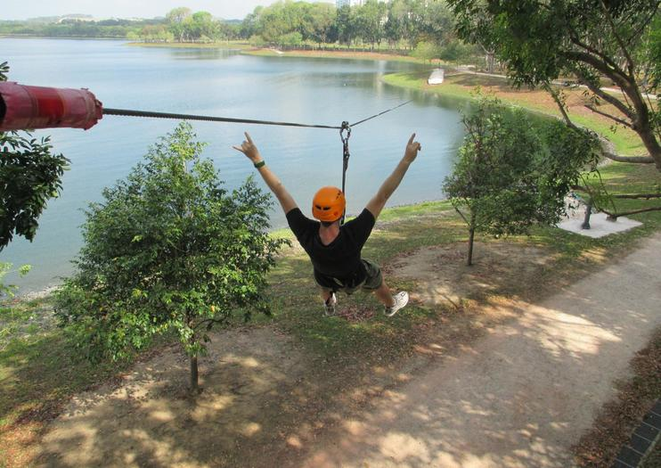

Bedok Reservoir Park
Bedok Reservoir Park - A popular place for fun and activities in Singapore, but slowly being avoided and forgotten by Singaporeans. This is due to the rising suicide cases in 2011 and 2012. It has since then became an infamous location. Over the years, with the upgradings and renovations done, Bedok Reservoir Park can be a good location for many. From joggers, to adrenaline junkies, to water sports enthusiasts, it is a all-in-one location to relax your mind.
Park Map
It might get a little confusing getting around the park, so use this map for ease and convenience.
 Activities
Calling for all Water Junkies to the Passion Wave


The park encircles the 88-hectare Bedok reservoir. Water sports enthusiasts can start gathering at the park to dragon boat or kayak at an affordable rate!
Opening Hours: Tuesday to Sunday 9AM - 6PM (closed on Mondays)
Contact: 97101697
Email: PA_WVBEDOKRESERVOIR@pa.gov.sg
Prices: Dragonboat (orientation programme): $15/ person
Kayaking (2 hours): $10
Kayaking (1 day): $17
For more information: visit their website.
Calling for all Adrenaline Junkies to the Forest Adventure


Head on down to Singapore's first and only treetop obstacle. A unique & unforgettable experience is guaranteed. Feel the exhilarating wind while flying across the 300m zipline above the water.
Opening Hours: Tuesday to Sunday 9.30AM - 6.30PM (closed on Mondays)
Contact: 81007420
Prices: Adult $20, Child (7-12 y/o) $10
Book your appointment now
Direction
Bedok Reservoir Park is located in the Eastern part of Singapore, and is easily accessible via public transport, car, or by foot if you live nearby. The park is wheelchair friendly too.
Bedok Reservoir MRT station Exit A is a 3 minutes walk to the entrance of the park.
Address:
760 Bedok Reservoir Rd, Singapore 479245
Opening Hours:
Monday to Sunday 7AM - 7PM, including weekends and PH
Getting there by train:
Bedok Reservoir Station DT30 (Downtown Line)

Getting there by bus:
Bedok Resvr Stn Exit A (84201), 3 minutes walk away: Bus no. 18, 28, 46, 66, 67, 69, 168, 228, 506
Opp the Clearwater Condo (75341): Bus no. 5, 18, 21, 22, 28, 46, 59, 67, 69, 168
The park is not sheltered so bring your umbrellas along.
Cameras are essential if you love fond memories and sharing them.
Haw Par Villa is probably the most Instagram-able place in Singapore!
We're a dog-friendly park! All dogs must be leashed. Big dogs must be muzzled for the safety of visitors.
Map:
Contact: 97101697
Email: PA_WVBEDOKRESERVOIR@pa.gov.sg
Prices: Dragonboat (orientation programme): $15/ person
Kayaking (2 hours): $10
Kayaking (1 day): $17
Contact: 81007420
Prices: Adult $20, Child (7-12 y/o) $10
Bedok Reservoir MRT station Exit A is a 3 minutes walk to the entrance of the park.
760 Bedok Reservoir Rd, Singapore 479245
Monday to Sunday 7AM - 7PM, including weekends and PH
Bedok Reservoir Station DT30 (Downtown Line)
Bedok Resvr Stn Exit A (84201), 3 minutes walk away: Bus no. 18, 28, 46, 66, 67, 69, 168, 228, 506
Opp the Clearwater Condo (75341): Bus no. 5, 18, 21, 22, 28, 46, 59, 67, 69, 168
Cameras are essential if you love fond memories and sharing them.
Haw Par Villa is probably the most Instagram-able place in Singapore!